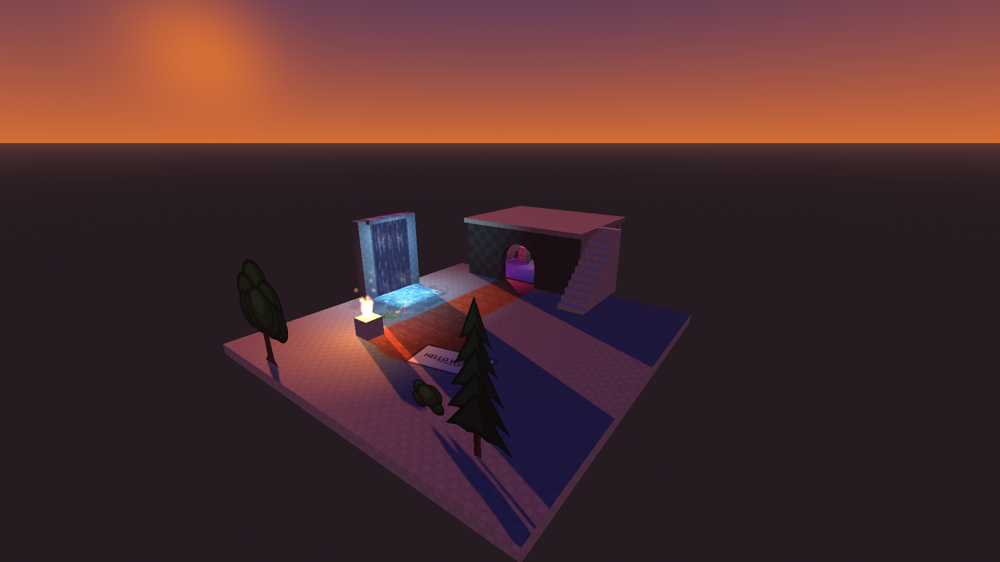
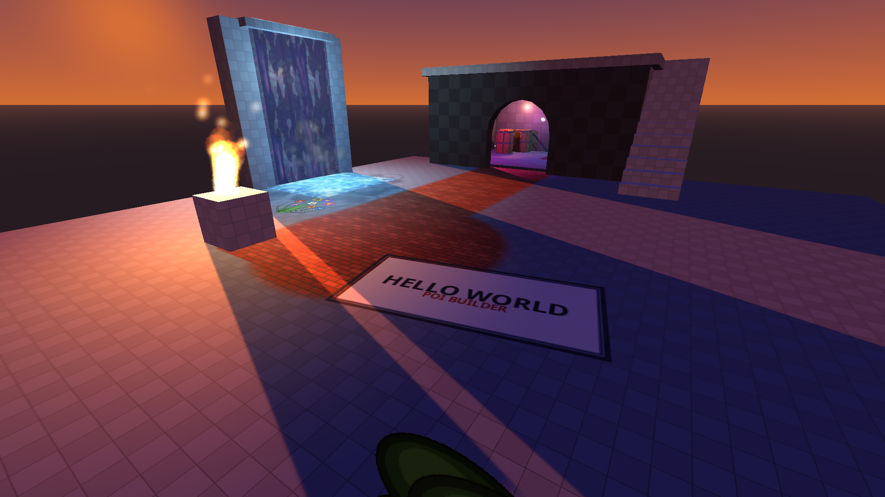
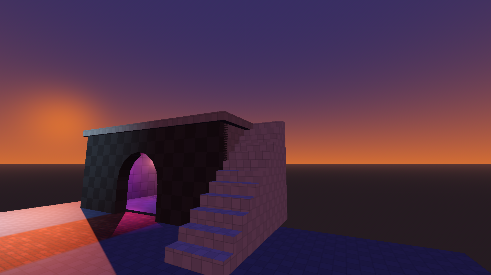
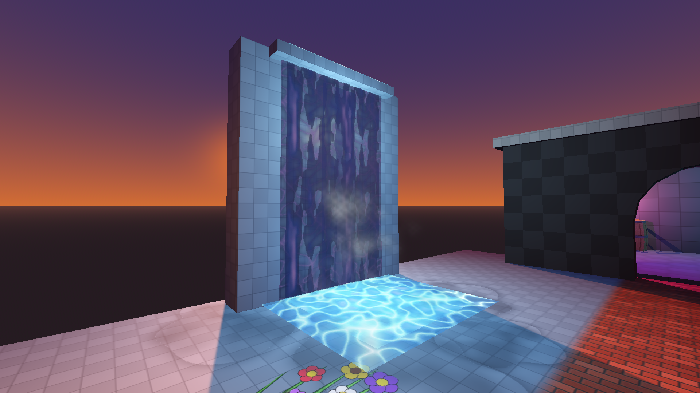
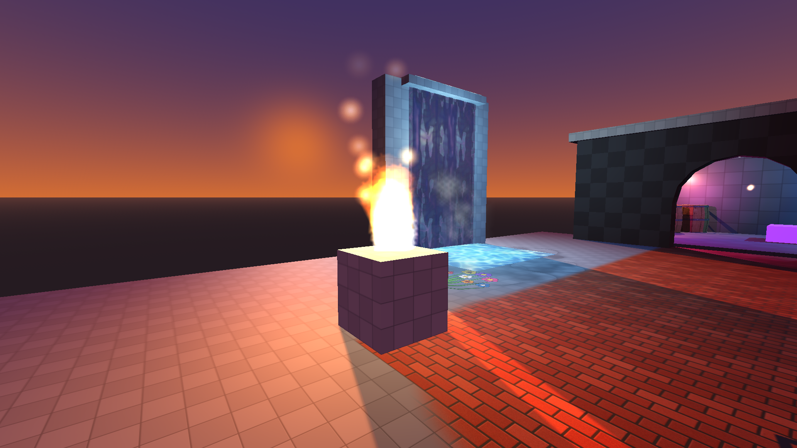
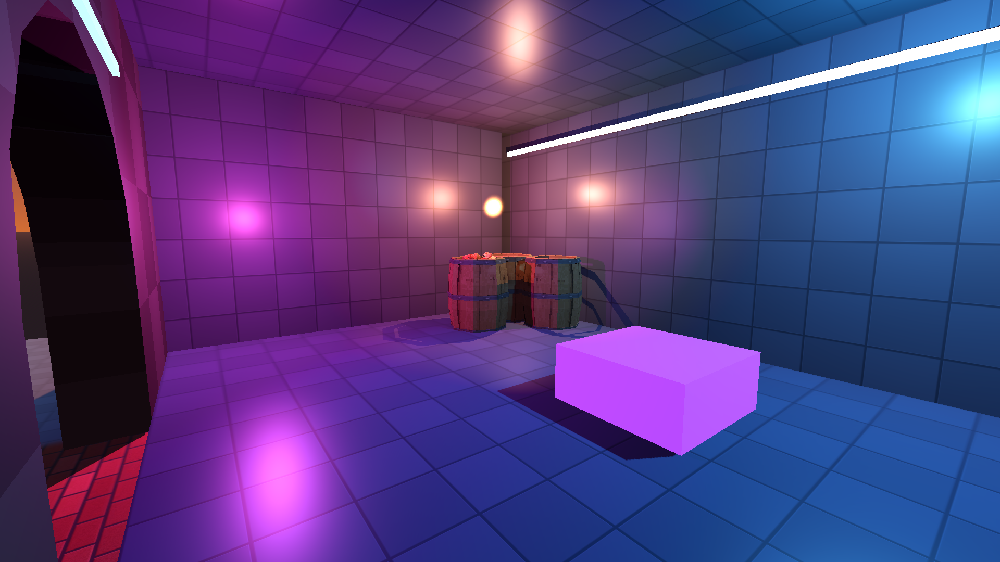
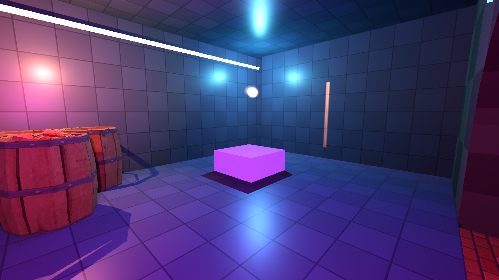

Walkthrough — build a map (modern)
From an empty Godot project to a finished map — architecture, splatting, decals, a waterfall, particles, billboards and a lightmapped neon room — then the same map as a GLB in a fresh project.
This is the whole pipeline in one pass. Everything you build here is ordinary PoiBuilder work — no scripts — and every screenshot is of the finished demo map that this walkthrough constructs. (If you want to compare your result against a reference, the finished map is in PoiBuilder's public repository — feel free to dig through how we build it there, or just roll your own.)
What you are building

A courtyard with a painted floor, a waterfall, and a small building: an arched doorway, exterior stairs to a walkable roof, and a closed neon room set up for baked lightmaps. Features on display: texture splatting, decal stamps, scrolling textures, particle emitters, billboards, walls/doors/stairs architecture, and LightmapGI.
0. Empty project
- New Godot 4.7 project (standard or .NET), any renderer. (4.6 stable works too — see Install.)
- Copy
addons/poibuilder/in, enable it in Project Settings → Plugins (that enable tick is always manual). - Open any 3D scene. The PoiBuilder toolbar appears under Godot's.
That is the whole setup — see Install for the release-zip route.
1. The courtyard floor
New Shape → Cube, press on the grid, drag a 16 × 16 m square, release, set the height to 0.5 m, click to confirm. Center it at the origin and sink it so the top face sits at Y = 0.
Give it a material first (you will splat it in the next step): Material dock → pick a texture (a dark slate tile works well) → click the cube's top face in Texture mode (6) to assign it.
2. Splat the floor
Texture splatting blends up to 8 albedos on one face, brushed like paint.
- Material dock → Texture Paint tab. The face you selected is the target; the dock shows its base texture as layer 0.
- Add a layer: pick a second texture (a brick pattern), make sure Paint into is set to Splat layers, then brush it into the mask. Paint a path from where the doorway will be, out to a circular plaza.
- Brush radius, softness and opacity live in the same panel; every dab is undoable.

Rules worth knowing: resize never stretches the tiling, and splat paint never touches UV2 (masks travel in their own vertex channel), so you can lightmap later without losing paint — see Paint & stamps.
3. Architecture: walls, door, stairs
- Walls — New Shape → Cube for each wall piece, or one long cube with inset/knife work. 0.5 m thick, 3.5 m tall is a comfortable scale.
- Arched doorway — New Shape → Door. Drag the base; an orange arrow shows the facing (hold Ctrl to lock it), release, set the height. In the params modal: Arched, Arch Segments ~8. The door shape IS the wall piece with the opening in it — no boolean needed.
- Exterior stairs — New Shape → Stair against the building's flank, running to the roof. Height = floor-to-roof; raise Steps until the treads meet the landing. The roof slab is a flat cube — walkable.

4. Two decals
A stamp is a PNG painted INTO the surface (a single click, no drag), and it spans faces freely — see Paint & stamps.
- Stamp tab → pick an image → click the courtyard floor. Cross the brick path's edge on purpose: the decal lands in its own layer, on top of any splat.
- A second stamp on the wall beside the door (posters, tapestries), and optionally a flower patch worn into the ground by the pool.
- Erase in the same tab rubs decal pixels back out.
5. The waterfall
A waterfall is LAYERED scrolling textures + particles — no shader graph. The demo one stacks, back to front:
- A wall panel to fall down (a cube), topped by a thin lip the water pours from.
- Plane shapes hung on its face, each with a water texture and a scroll speed set in the Material dock (repeats per second, signed — negative V falls down a wall). The stack: a full-width bright veil scrolling slowly, the streaky sheet over it, two narrow side trickles on their own speeds, and a fast core in front — the parallax between speeds is what sells depth. All blended alpha.
- An apron on top of the lip crawling towards the edge, a ripple pool on the floor, a bright foam ribbon at the impact and a wide faint swell behind it — every one just another scrolling plane.
- Two spray billboards at the base (alpha cutout, texture scrolling upward at different rates), and a mist emitter whose emission sphere is as wide as the sheet — a point emitter reads as a puff, the sphere reads as a bank. A second tiny emitter drifts a wisp up the wall face.

The scroll speed is DATA that travels with the export — the retro bake writes each mesh's speed into the.pbm(uv_scroll_u/v), and a modern GLB carries it in the material's glTFextras. What does NOT travel is the animation code: a consumer moves the UVs itself (uv(t) = uv(0) + t · speed). See Export & retro for both recipes. Two authoring rules: the retro bake exempts scrolling faces from the tile atlas (a scrolling face keeps its own texture — that is what slides), and do not splat-paint a scrolling face — paint bakes to a static tile.
6. Billboards
B arms the sprite placer: pick a texture from the carousel, click a surface, drag to raise, move to scale, click to commit. Two trees and a bush fill the courtyard out. At export a billboard keeps facing the camera on the PSP; in Godot it is a quad — a MeshInstance3D named sprite*/tree* also exports as a billboard.
7. Particle emitters
- Material dock → Particles tab. Pick a particle texture — presets arm themselves per texture (flame, smoke, glow).
- Click a surface: the emitter appears live. Drag up/down to lift it off the surface, move left/right to tune the particle count, wheel scales the quads, click to commit. Always re-armed, Esc cancels.
- To fine-tune one later: select it (object mode is fine) → ⚙ Edit Emitter Properties on the overlay panel — count, size, speed, spread, additive blending, flipbook grid.

The retro format caps 64 particles per emitter and ~256 per map — the placement tool's knobs are budget-aware so what you author is what the PSP can play.
8. The neon room (lightmap-ready)
A closed room shows off baked light: dark envelope, colored strips, colored lights, props.
- Envelope — four wall cubes, a ceiling slab, an interior floor, all with a dark material (keep the albedo texture visible: an albedo multiplier darker than ~40% crushes the pattern away).
- Neon strips — thin boxes with an emission material (cyan / magenta, emission energy 4–6). Emission is a light source the baker understands.
- Colored lights — OmniLight3D nodes,
light_bake_mode = Static, shadows on. Keep energies LOW (1–2): a closed room concentrates them. - Props — drag a GLB from the FileSystem dock into the room. The demo map uses market barrels from the PSX Modular Medieval pack by valsekamerplant (itch.io) — leave them unconverted; imported props export fine (see Objects & CSG).
- Make it bake-ready — select each room mesh → UV editor → Lightmap button (unwraps UV2 and flips the mesh to GI Mode: Static). Add a LightmapGI node (bounces 3, directional, generate probes).
- Bake — with the LightmapGI node selected, Inspector → Bake Lightmaps. Walk the room: the strips and colored lights now bounce, and the barrels (GI Dynamic) pick up probe light.


9. Play it
Your map needs a camera before it plays. Two routes, both minutes:
A fly camera (the three-minute route). Add a Camera3D to the scene, make it current, and attach a script like this one:
extends Camera3D
# Minimal fly camera: click the viewport to capture the mouse,
# WASD + mouse to fly, E/Q up/down, Shift for speed, Esc to release.
@export var speed := 6.0
@export var boost := 3.0
@export var sensitivity := 0.003
func _unhandled_input(event: InputEvent) -> void:
if event is InputEventMouseButton and event.pressed \
and Input.mouse_mode != Input.MOUSE_MODE_CAPTURED:
Input.mouse_mode = Input.MOUSE_MODE_CAPTURED
elif event is InputEventMouseMotion \
and Input.mouse_mode == Input.MOUSE_MODE_CAPTURED:
rotate_y(-event.relative.x * sensitivity)
rotate_object_local(Vector3.RIGHT, -event.relative.y * sensitivity)
elif event.is_action_pressed("ui_cancel"):
Input.mouse_mode = Input.MOUSE_MODE_VISIBLE
func _process(delta: float) -> void:
var dir := Vector3.ZERO
if Input.is_key_pressed(KEY_W): dir -= transform.basis.z
if Input.is_key_pressed(KEY_S): dir += transform.basis.z
if Input.is_key_pressed(KEY_A): dir -= transform.basis.x
if Input.is_key_pressed(KEY_D): dir += transform.basis.x
if Input.is_key_pressed(KEY_E): dir += Vector3.UP
if Input.is_key_pressed(KEY_Q): dir += Vector3.DOWN
if Input.is_key_pressed(KEY_SHIFT): dir *= boost
if dir != Vector3.ZERO:
global_position += dir.normalized() * speed * deltaClick the viewport, fly. This is usually all a map-in-progress wants.
A walking player. Add a CharacterBody3D with a capsule and a camera (Godot's first-person template works), and make sure the meshes' Collider property is set (Accurate for floors/walls/stairs) — PoiBuilder meshes carry their own collision.
10. Export the map as GLB
Toolbar  Export...
Export...
 Row 2 · Export
Row 2 · Export Export...Opens the export dialog: PBM (the retro .pbm map, default) or GLB — modern bake (lightmap-ready) or retro baked (vertex-lit) — with the bake options.Needs: Nothing (always enabled) → GLB — Modern Bake (lightmap-ready) — the first GLB flavor, and the one to play/ship on the modern pipeline. Selecting it defaults the dialog to the optimized bake:
Export...Opens the export dialog: PBM (the retro .pbm map, default) or GLB — modern bake (lightmap-ready) or retro baked (vertex-lit) — with the bake options.Needs: Nothing (always enabled) → GLB — Modern Bake (lightmap-ready) — the first GLB flavor, and the one to play/ship on the modern pipeline. Selecting it defaults the dialog to the optimized bake:
- Modern paint → Bake into textures (default) — every painted face (splat layers and decals) becomes its own texture; any consumer shows your paint.
- Vertex lighting off (default) — the bake carries no vertex colors; your realtime lights or a LightmapGI bake stay in charge. (The retro flavors bake light into vertices instead.)
- Include splat data — the alternative paint mode: masks/layers/decals ship as sidecar PNGs with a
poi_splatrecord for engines that re-blend at runtime (recipe).
Playing the PoiBuilder scene itself is for building, testing and iterating — the live splat shader and decal layers carry a real GPU cost (~4× the retro bake on the benchmark baseline). When you want to play or share the map, export the GLB and play that.
Collision ships as Collider_* meshes. Particle emitters ride the GLB as DATA: each emitter's node carries a poi_emitter record in its glTF extras (count, colors, spread, the whole authoring), so a consumer rebuilds the emitter from it — the reference viewer in the repository does exactly that — or you bake the look into the textures you take along.
11. The GLB in a fresh project
- New Godot project → copy the exported
.glbin (plus the.splat/folder if you chose Include splat data). - Drag it into a 3D scene. Geometry, materials, paint and colliders land as a static scene — no plugin needed to VIEW it.
- Add a light and a player, press Play. That is the modern pipeline's contract: the map is ordinary glTF when it leaves.
Next: the same map on a retro target — Walkthrough: export to PSP/retro.